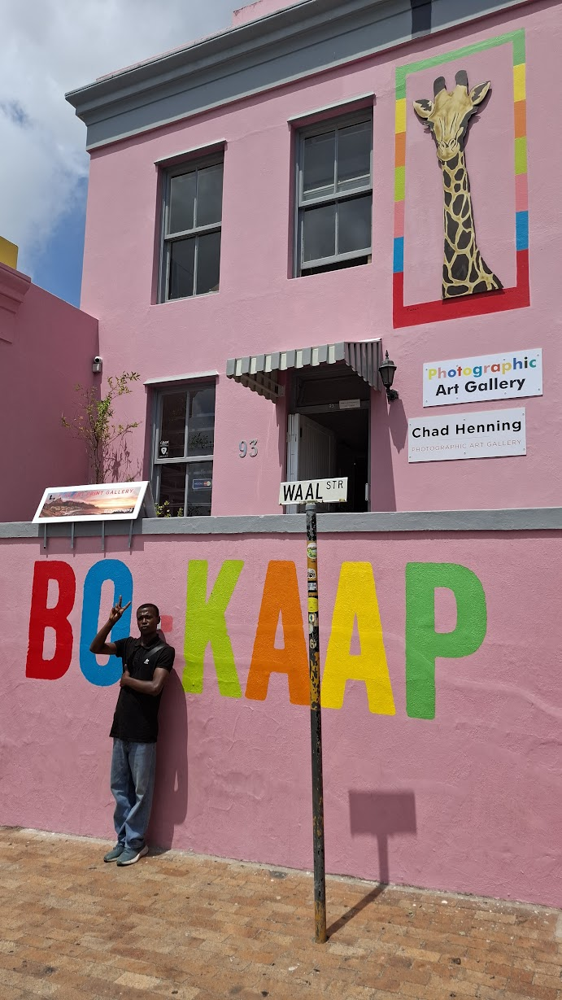
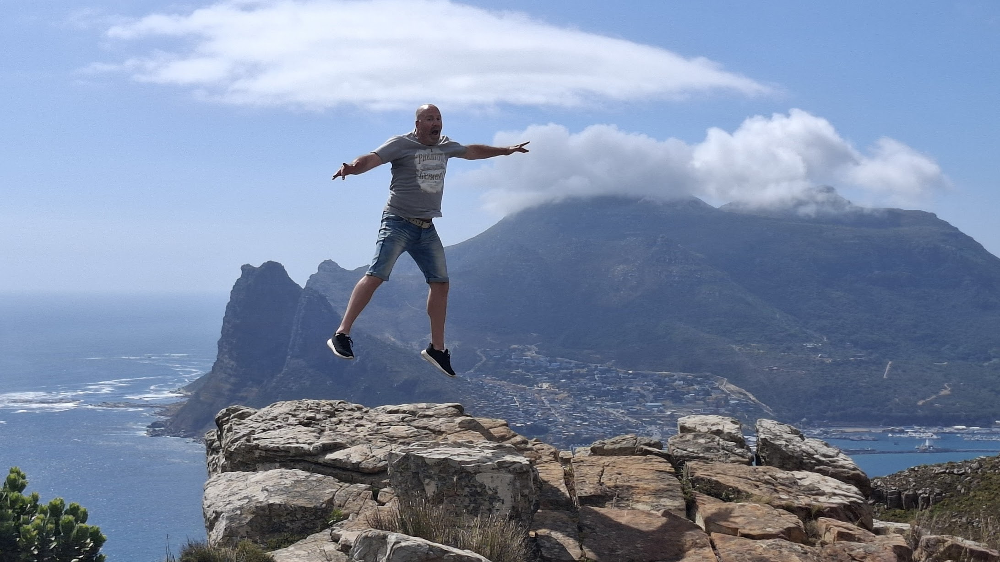
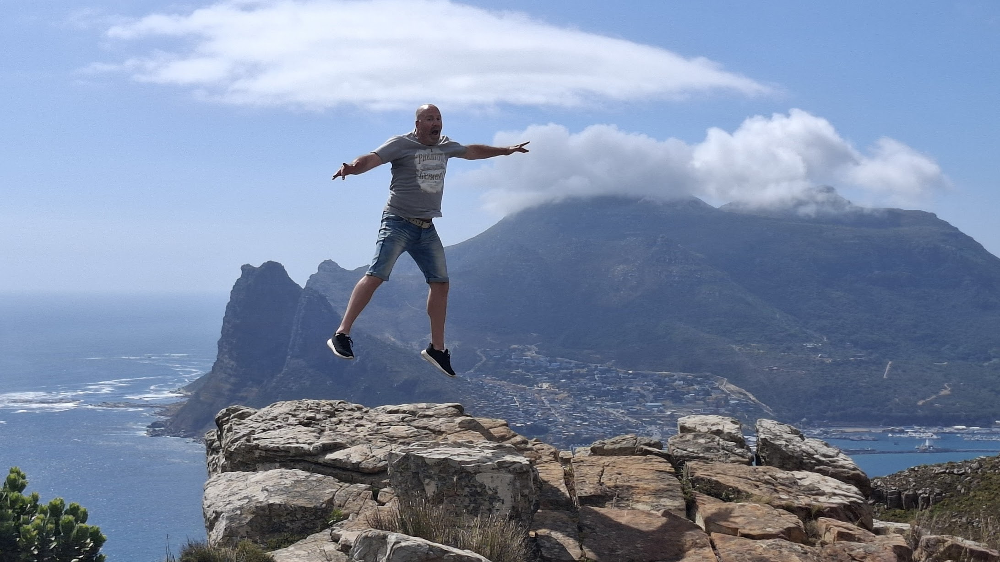
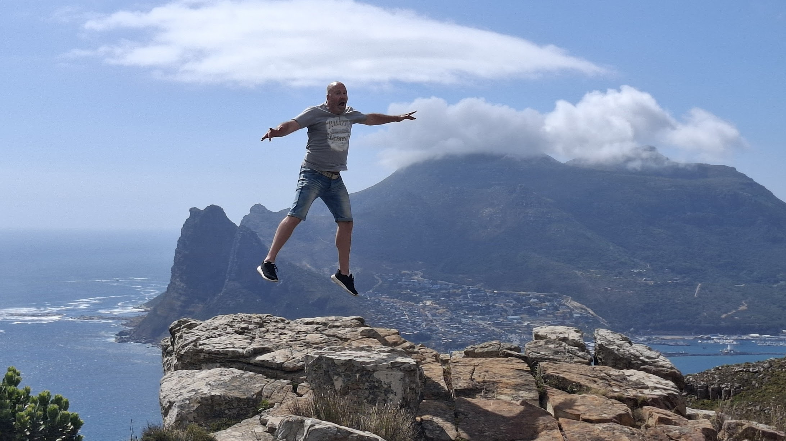
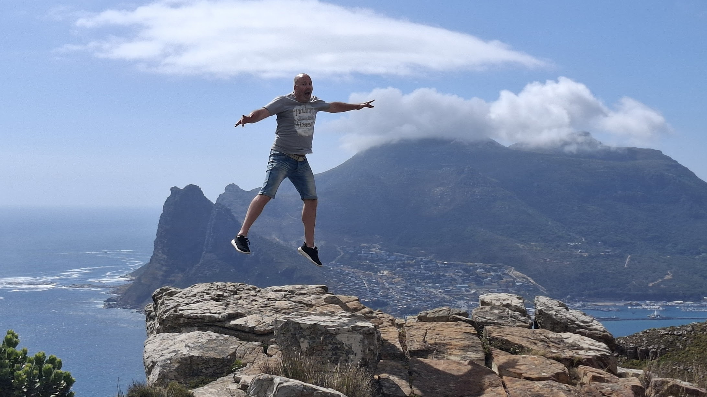

Cape Town Highlights

 



Explore Cape Town with a true local – stories, culture, history, fun vibes and stunning photos included ☀️📸
Bathandwa Matiwane – born and raised in the suburbs of Cape Town, young, energetic and deeply connected to the city.
From colourful Bo-Kaap streets to township life, Parliament, Long Street and the V&A Waterfront – I’ll show you Cape Town through local eyes.
Bonus: I’m also your personal photographer. No rushed selfies – just relaxed, fun photoshoots with patience and good vibes.

R200
Perfect for a quick city highlight experience.
R300
Deeper stories, more places, more photos.
All tours are relaxed walking routes with plenty of photo stops, stories and local insights. Exact routes can be adjusted to your pace and interests.
Anyone can show you landmarks. A local shows you the stories behind them.
★★★★★
"Best experience in Cape Town. Felt like walking with a friend, not a guide."
– Anna, Germany★★★★★
"Amazing photos, amazing stories. Highly recommended!"
– James, UK★★★★★
"We saw places we would never find on our own."
– Sofia, SpainPayment is simple and flexible. You can pay cash (ZAR) on the day, or arrange PayPal / card payment after booking confirmation.